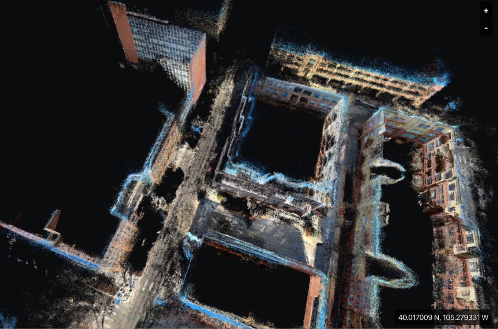
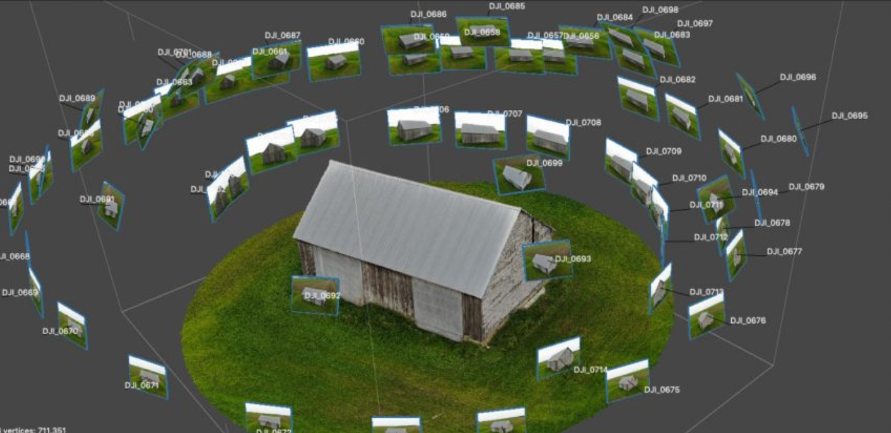
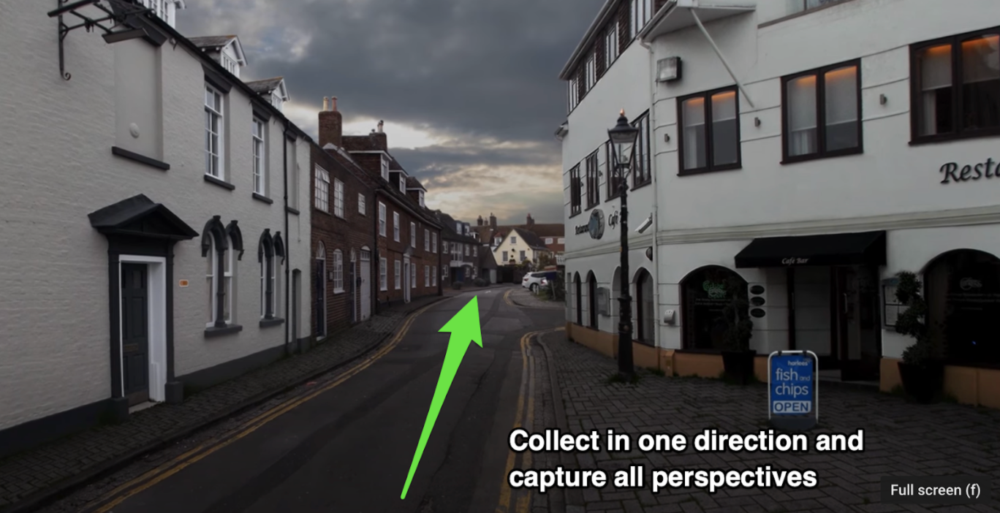
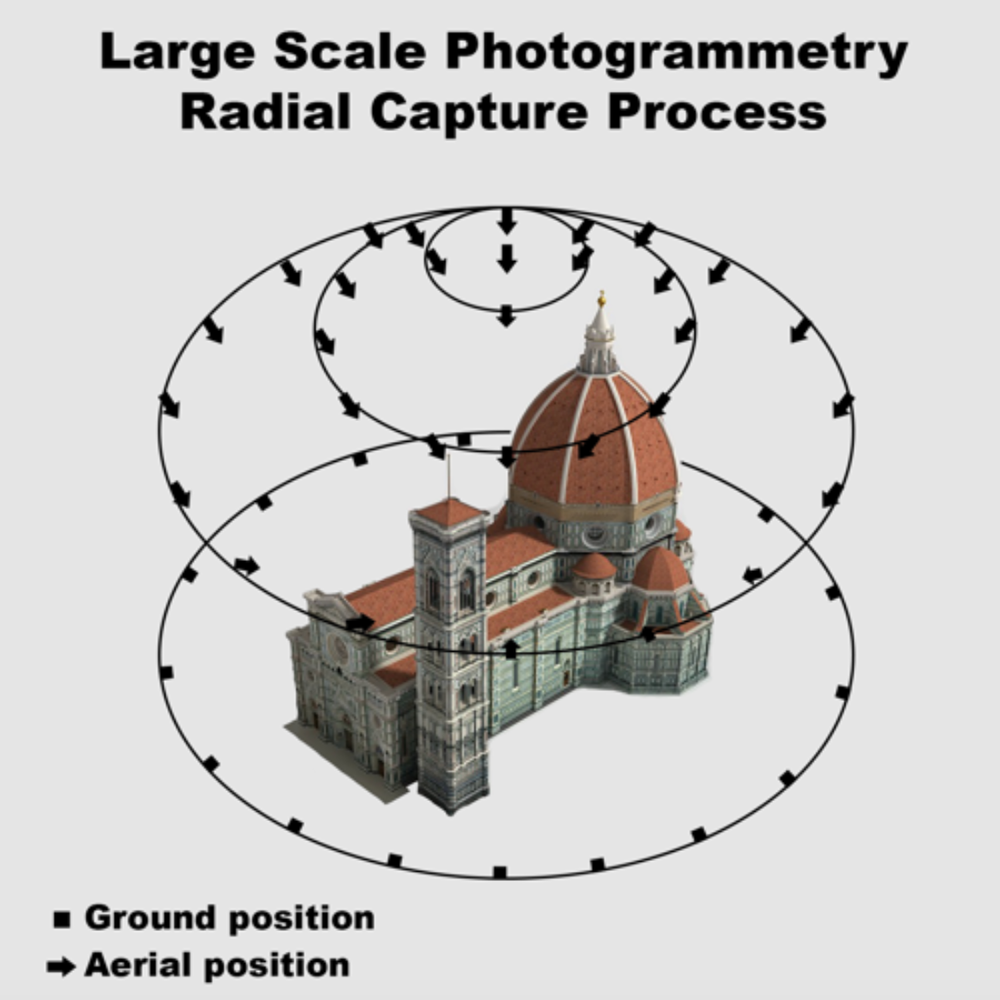
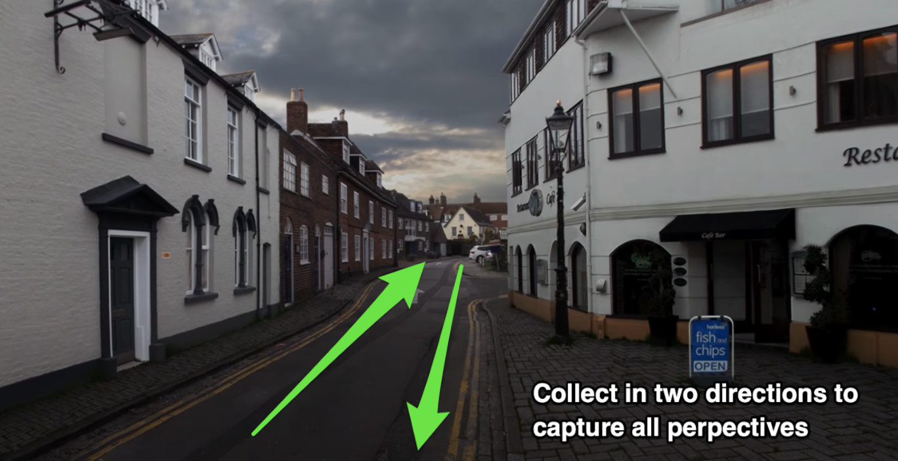

Imagery Collection Best Practices for Pixel8.earth Photogrammetry

Introduction
Mapping the world in 3D entails collecting a lot of video and photos then aligning them to a real world coordinate system (latitude, longitude and altitude). Depending on the type of camera you are using there are a variety of strategies to get the best result transforming images into 3D models (a.k.a. photogrammetry). In the best practices guide we’ll cover strategies for the most common camera types we support for building 3D worlds. This initial version will cover 1) 360 action cameras, 2) forward facing video cameras and 3) still photography.
The common theme in all camera strategies is we want to collect as many perspectives of the built environment as possible. We say “built environment” specifically because we don’t want to deliberately capture transient objects like people or cars. The reason for avoiding these transient objects is 1) privacy and 2) they aren’t useful references. The reason we want to maximize the number of perspectives we have of the built environment is to generate the best photogrammetrical result possible. In the image below we can see how multiple images capturing all the perspectives of a small house help generate a complete 3D model.
 Courtesy of Bitfab.io
The more overlap in your photo/video and the greater the diversity of perspectives the better the results. Depending on the type of camera you are using it will vary the amount of work you need to capture the requisite variety of perspectives. We’ll cover the benefits and resulting strategy for each camera type next.
360 Action Video Cameras
Pixel8.earth currently supports both GoPro Max and Fusion, which both generate a 360 degree format. The beauty of using a 360 degree capture is you collect all the visible perspective for a scene in one pass. This means that if you are collecting a street’s built environment you only need to collect imagery going in one direction.
 Courtesy of Holli Packwood via Youtube
The use case for Pixel8.earth is focused on collecting the world’s outdoor built environment. Most of this is easily accomplished with simply capturing streets. Often there are also unique features like sculpture, monuments, statues, etc. that can be circled instead of just passed by. In this case looping around an object or structure is a great strategy for maximizing the number of perspectives you capture. The 360 camera is awesome but it can’t capture the other side of an object unless you convey the camera to that perspective. In drone photogrammetry they call this a radial collection pattern, which is a good analog to compare to:
 Courtesy of Nabpilot.org
The beauty of the approach Pixel8.earth has taken is we don’t need the aerial positions because we can stitch our ground collection with previously collected aerial imagery. In summary using a 360 degree camera you can just do one pass down a street to get good imagery for a 3D model. If there is an opportunity to circle around objects you want to get better detail on it is a big help.
Front Facing Video Cameras
While 360 cameras make photogrammetry easier there are a lot more standard forward facing video cameras available. Whether you use the video camera built into your mobile phone or a dedicated action camera like a GoPro or Garmin there are several good strategies to collect the best data/imagery. One of the best tutorials on collecting video for photogrammetry is Ubiquity6’s guide on “how to capture” reality. The three core principles Ubiquity6 reinforcers are:
- Start wide - get the big view of an object first then get closer for more detail.
- Point and turn - lock on to a feature you want to model the pivot around it while keeping it the center of your attention.
- Get all sides - get all the sides of a location or object possible. The more perspectives you collect the more complete your model will be. If the camera doesn’t see a side it can’t be recreated for the 3D model.
If you are collecting a street using a forward facing camera you want to capture going in both directions of the street. The image below lays out this basic concept:
 Courtesy of Holli Packwood via Youtube
By collecting in both directions with a forward facing camera you increase the odds of getting multiple perspectives of the built environment. If you have a street with a statue on it you’d want to travel both directions of the street then circle around the statue to get all the facets for a good 3D model.